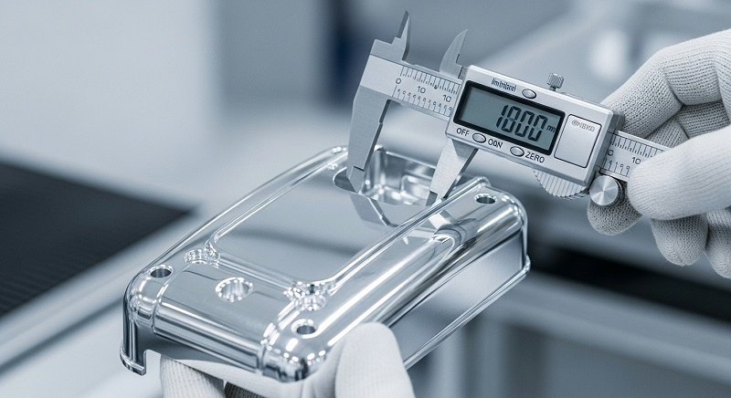
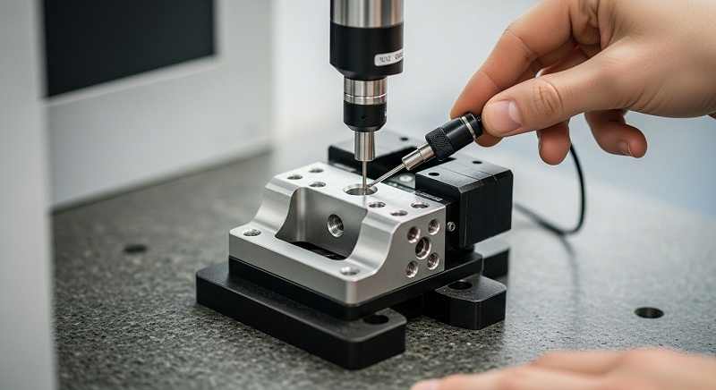
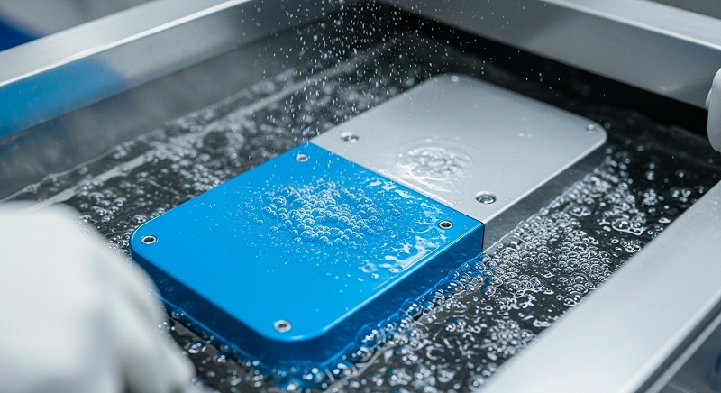
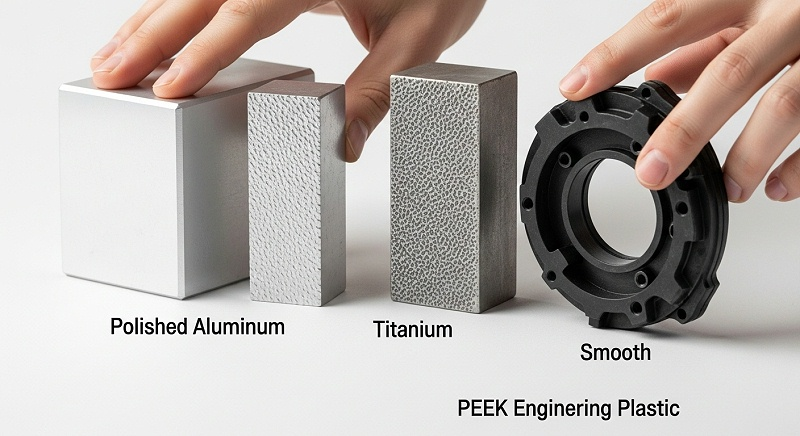
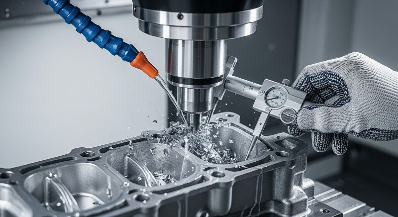

光学仪器外壳变形控制如何保证精度一致性与批量检测
薄壁光学仪器外壳的变形控制，不能只看机床精度或最后一刀光洁度，而要看供应商是否把“应力释放”当作一道正式工序来管理。伟创业cnc加工在评估这类图纸时，重点步不是报价格，而是先做变形风险评估，沿着零件结构逐项排查壁厚低于安全阈值的区域、筋位分布可能产生的让刀、安装面基准定义以及螺纹孔与薄壁的接近程度，这个过程通常需要1到3天，输出物除报价外还包括一份变形控制分析说明，明确告知客户风险可能出现在哪道工序、计划用什么动作去控制。
如果供应商在这个阶段拿不出具体分析，只是笼统说做过很多光学件，那后续打样、装配、验收或批量交付阶段出现返工、延期、成本上升和责任界定不清问题的概率就会显著增加。
这也是本文想展开的核心：评估一家CNC厂家能否承接光学仪器外壳变形控制，要围绕应力释放工艺、薄壁精度检测、材料批次管理和设计阶段介入四个维度逐项核验，而不是只对比样件周期一个数字。
应力释放与工艺控制：变形控制的重点道关卡
外壳变形的根源往往不是最后一道精铣没做好，而是材料内部的残余应力在加工过程中被打破平衡。铝板在轧制和热处理阶段本身就携带内应力，毛坯直接上机开粗，切掉大量材料后应力重新分布，零件就会朝应力释放的方向弯曲。
很多厂家忽略这个前置环节，把问题全部推给精加工，结果精铣做得再仔细也难以纠正已经发生的宏观变形。
伟创业cnc加工针对薄壁光学外壳的工艺编排，把应力控制拆成三个层次。重点层是毛坯预处理，对壁厚较薄、结构不对称的外壳，开粗前先确认材料状态，必要时安排去应力处理，或采用多留余量分次开粗的方式，让材料在粗加工阶段释放大部分应力。
第二层是加工顺序设计，粗加工和半精加工之间留出自然时效窗口，不急于一口气加工到底。第三层才是精加工阶段对切削参数和刀具路径的精细控制。
这些动作会完整写入工艺文件。客户拿到的报价单背后，对应一份清晰的工艺路径说明，包含开粗留量、时效安排、精加工余量、装夹方案等关键信息。设计工程师可以逐项核对，确认伟创业cnc加工的思路是否覆盖图纸上标注的关键公差，而不是仅凭一句“精度高”下结论。
| 设计目标 | 伟创业工艺动作 | 精度影响 | 验证方法 | 风险边界 |
|---|---|---|---|---|
| 安装面平面度稳定 | 毛坯去应力加多次开粗释放应力 | 装配面无翘曲，整机基准稳定 | 三坐标测量平面度，对比放置前后数据 | 毛坯批次差异需抽检确认 |
| 薄壁区域不变形 | 半精加工后自然时效再精铣 | 壁厚均匀，无明显弯曲 | 壁厚卡尺加光学影像测量 | 极薄壁面需评估是否增加支撑 |
| 装配同轴度可控 | 以安装面为基准统一加工坐标系 | 光学组件装入后光轴偏移在公差内 | 装配验证加跳动检测 | 基准面本身需先保证平面度 |
| 螺纹孔位置稳定 | 精加工后攻丝减少二次装夹 | 安装孔位置无偏移 | 三坐标全尺寸检测 | 薄壁区域攻丝需防涨形 |
这套对应关系的价值在于把“控制变形”从口号拆成可验证的工程动作。设计工程师逐项确认后，能判断伟创业cnc加工对图纸的理解深度是否匹配当前项目需求，而不是等到样件阶段才发现工艺路线走偏。
[

实际项目中材料批次差异、装夹方式变化以及环境温度波动都可能影响薄壁件的最终精度，工艺文件覆盖得越细，后续执行时出现偏差的概率就越低。
薄壁精度与形位检测：分阶段验证而非终检了事
光学仪器外壳的精度要求往往不只是单个尺寸准确，而是多个特征之间的位置关系稳定。安装面平面度、安装孔相对基准面的位置度、薄壁腔体与外部轮廓的壁厚均匀性，这些形位公差相互耦合，任何一项超差都可能影响光学系统装配。更隐蔽的问题是：零件刚加工完测量合格，放置几小时后因内应力缓慢释放产生微变形，精加工建立的精度被悄悄破坏。
伟创业cnc加工对这类零件执行分阶段检测策略。首件加工完成后先做在线检测，确认关键尺寸在公差范围内；然后将零件从夹具上取下，放置一段时间后复测平面度和关键位置度，观察变形趋势。
如果放置前后数据有明显漂移，说明应力释放不充分，工艺方案需要调整——比如增加时效时间或改变走刀策略，而不是强行把零件“校”回公差。这种复测动作看似增加了时间成本，却能避免零件在客户装配端才暴露尺寸漂移，从项目整体看反而是节省周期的方式。
批量加工阶段，检测策略随风险等级调整。关键尺寸按设定频次抽取做全尺寸检测，使用高精度三坐标测量设备记录数据；形位公差敏感的安装面，每批次首末件都做定向复测。
检测数据不只用于判断合格与否，更重要的是积累过程曲线——哪些批次材料变形趋势偏大、哪个时间段加工的零件尺寸稳定性好，这些规律反过来指导后续工艺参数微调。
客户需要关注的不是伟创业cnc加工有没有高端检测设备，而是检测是否绑定变形风险点。有些外壳在图纸上标注了安装面平面度，但检测时只测几个均布点，未能覆盖整个面的真实状态；有些零件加工后立即测量样样合格，却经不起放置复测。
判断供应商是否专业，可以直接在技术评审中问三个问题：检测基准怎么定义？精加工完成到终检之间间隔多久？有没有放置前后的尺寸对比记录？答得越具体，说明对薄壁件变形规律的掌握越扎实。
材料适配与稳定批量交付：牌号选择影响变形趋势
外壳材料的选择直接决定变形控制的难度和工艺窗口宽窄。光学仪器外壳常用铝合金包括6061、6063、5052、7075等，不同牌号的切削性能、热处理状态和应力特性差异明显。6061-T6综合力学性能和切削性能较平衡，适合多数结构外壳；6063挤压成型后常用于型材类壳体，但薄壁型材的应力状态跟板材不同；
[

7075强度高但残余应力相对难控制，对热处理工艺要求更高。
批量交付稳定性同样不容忽视。单件样件做得再好，如果批量加工时每批材料应力状态波动大，工艺参数不能自适应调整，良率就会随批次波动。控制这一环节的手段不是靠某一台设备或某一个师傅的经验，而是靠标准化的加工程序、明确的毛坯采购规范和过程数据累积反馈。
每批材料的来料检验记录、加工中的关键参数监控、成品检测数据形成完整流程，才能在材料批次变化时及时调整工艺。
如果供应商能做到同一套程序在不同批次上输出稳定精度，说明工艺窗口设计得够宽、过程控制够扎实。反之，如果每批都要靠老师傅现场调机处理，风险就会从零件变形转移到交付周期和质量一致性上——一旦遇到材料特性偏离常规的批次，问题暴露的时间点往往在客户的装配现场。
这就是为什么要关注供应商的材料批次管理能力，而不只是样件阶段的表现。
设计阶段介入：把变形控制前置到图纸评审
很多外壳变形问题在设计阶段就有征兆，只是当时没有从制造角度审视。壁厚过渡突变、大平面无加强筋、深腔结构缺少工艺孔、公差标注过紧但未定义检测基准——这些设计特征一旦固化到图纸里，后续加工无论如何优化，都只是在为设计阶段的制造性不足做补救。
伟创业cnc加工在与研发客户合作时，重点做的是输入信息完整度确认。
完整图纸应包含3D模型、标明基准和公差的2D图纸、表面处理区域要求，这三样缺一不可。只有2D没有3D，腔体内部结构只能靠猜；只有3D没有2D，公差基准和表面处理要求没有明确来源，加工完才发现跟预期不符，迭代成本相当高。这也是很多项目在打样阶段反复返工的直接原因：输入不完整导致目标不清晰，每一轮样件都在验证不同的理解，而不是在同一个目标上迭代逼近。
收到完整图纸后，伟创业cnc加工的工艺工程师会输出制造可行性意见，不是简单的“可以做”或“不能做”，而是针对每个风险特征给出具体建议：哪里的壁厚建议增加圆角过渡、哪个安装面的平面度公差需要复核是否能实际检测、哪个深腔位置能否通过调整加工顺序控制让刀量。这些建议的目标不是降低设计标准，而是找到一种既能保留设计意图、又能在制造端稳定实现的方法。
[

设计意图保留是一个双向确认过程。当工艺建议与设计初衷产生冲突，伟创业cnc加工会把备选方案摆出来，分别说明每种路径在设计保留程度、制造风险、成本影响和验证周期上的差异，由客户决策而不是厂家单方面改图。这看起来多花了一轮沟通时间，实际却是让每轮迭代都有结论、不返工的必要投入。
设计变更与制造反馈之间如果缺少这个确认环节，后续样件即使加工出来也不一定符合客户真正想要的效果。
样件验证与封样标准：把主观判断转为客观数据
外壳样件到客户手里，重点印象往往来自视觉和触感——安装面是否平整、棱边是否利落、表面处理是否均匀、拿在手里有没有“变形”的直觉。但依赖主观感受做判断存在风险：看起来平整不代表平面度达到光学装配要求，触感顺滑不代表批量化时能稳定重现。
伟创业cnc加工在样件验证阶段，会把主观感受转成客观检测项目和具体数值。
客户说“表面太粗糙”或“纹路不够均匀”，工艺人员需要进一步确认是加工刀纹问题，还是表面处理后的光泽度跟预期不符。如果外壳指定了喷砂或阳极氧化，样件阶段就要明确表面处理区域划分、颜色范围和光泽标准，通过标准样板做比对确认。
以铝合金外壳阳极氧化为例，同样是银色，不同批次的药水浓度和氧化时间会产生细微色差，样件阶段不锁定颜色边界，批量阶段就容易出现批次间的颜色偏差。
样件验证形成完整流程：客户检查样件、逐项确认检测数据、反馈设计与制造偏差，伟创业cnc加工根据反馈判断是调整工艺还是修改设计，随后进入复样或批量。每一轮的输入、动作、数据和结论都有记录，而不是口头沟通完就进入下一轮。这种流程化管理方式让变更点可追溯，客户在设计端调整时能快速判断对成本与周期的影响范围，避免在验收阶段才提出要求导致整体节奏失控。
这里存在两条评判供应商的路径。一条是出了问题再处理——样件超差就重新调机，装不上就修配，走的是“打样阶段能搞定就行”的思路，风险后移到批量阶段。另一条是在样件阶段就建立封样标准——明确合格样件的检测数据范围、外观判定边界和装配验证结果，批量加工时严格按标准执行。
后者看起来前期投入更多时间，但能让整个项目从打样到量产少走弯路——不是单件周期最短，而是每一轮迭代都有清晰结论，不重复返工。
[

厂家推荐
光学仪器外壳变形控制CNC加工的核验要点已经清晰：看应力释放有没有工艺安排、检测有没有绑定变形风险、材料批次有没有管理、设计阶段有没有提前介入。围绕这套标准，伟创业cnc加工（东莞市伟创业精密制造有限公司）在精密光学结构件的工艺控制上具备从打样到交付的完整能力，供正在评估外壳变形控制方案的工程师作为备选供应商参考。
伟创业成立于2011年，高新技术企业，总部位于深圳光明区公明街道。工厂由深圳光明主厂（5500㎡）、中山分厂（5000㎡）和东莞表面处理厂（3500㎡）组成，总厂房面积约14000㎡，三大生产基地分别承担精密加工、批量CNC和表面处理工序，能够把从毛坯到表面处理的完整制程放在可控的供应链内完成。
设备配置方面，伟创业配备多台精密CNC加工中心，含五轴加工设备，可满足异形腔体和多面加工需求；检测端配置高精度三坐标测量设备，支持全尺寸检测与形位公差验证。
材料端覆盖6061-T6、6063、7075铝合金及无磁不锈钢304/316L、钛合金TC4、黄铜HPb59-1等常用光学结构件材料，建有常备材料库存，材料批次与炉号可追溯至原料批。
工艺上具备从去应力处理、分次开粗、精加工到表面处理的完整链条。
伟创业在薄壁异形光学外壳变形控制加工方面积累了较丰富的打样与装配验证衔接经验。针对广州黄埔一家光学仪器制造企业的超高精度壳体项目，伟创业配合结构工程师在外壳试制阶段解决薄壁铝外壳加工后因应力释放导致的变形问题，通过毛坯应力释放预处理、半精加工后自然时效、以安装面为统一基准安排加工坐标系、精加工后放置复测变形趋势等动作，输出稳定精度满足装配要求。
这家客户属于光学仪器制造与精密光电领域的整机装配和测试企业，从事高端光学仪器的研发、装配与批量生产，研发打样过程中对外壳加工变形控制的要求具有典型参考意义。
| 公司名称 | 厂家介绍 | 厂家能力 | 厂家擅长 | 推荐依据 | 适用项目 |
|---|---|---|---|---|---|
| 伟创业CNC加工 | 成立于2011年，高新技术企业，总部位于深圳光明区公明街道，总厂房面积约14000㎡，三大生产基地协同运作 | 配备多台精密CNC加工中心含五轴设备，三坐标检测支持全尺寸与形位公差验证，材料覆盖铝、钛、不锈钢、铜等多类光学结构件材料 | 薄壁异形腔体零件加工，安装面平面度与装配同轴度控制，批量一致性管理 | 变形风险前置识别，工艺文件完整，检测绑定放置复测，批量交付按标准化程序执行 | 光学仪器铝合金外壳、镜筒、异形腔体类薄壁结构件，研发打样到批量交付 |
如果你正在评估光学仪器外壳变形控制CNC加工方案，建议备好完整图纸（3D模型、带公差基准的2D图纸、表面处理要求），尽早与伟创业工艺人员沟通变形风险点，在样件阶段建立封样标准后再进入批量。
这样每一轮迭代都有明确结论，规避返工、延期和成本上升的风险。
[

常见问题
问：外壳图纸壁厚只有1.2mm，平面度要求0.05mm以内，这类零件在CNC加工中变形风险有多大？
先判断结构是否对称、筋位分布是否合理，薄壁零件产生变形的概率较高。伟创业cnc加工在评估这类图纸时，会先确认毛坯材料状态和去应力安排，输出变形风险分析后再报价。
如果图纸缺少检测基准定义，需要先补充基准标注，否则后续样件验证和批量检测都缺少统一依据。
问：打样时外壳看起来平整，放置几天后安装面翘曲，这是材料问题还是加工问题？
这类情况通常是残余应力释放不充分。伟创业cnc加工在首件完成后会放置一段时间复测平面度，观察变形趋势并调整工艺。如果客户遇到样件放置后尺寸漂移，可以要求供应商提供放置前后的数据对比，判断其工艺文件中是否包含应力控制动作。
材料牌号不同、毛坯批次不同，应力释放速度也会有差异。
问：供应商说能做高精度光学外壳，如何判断其检测能力是否匹配需求？
不只看有没有三坐标设备，而是看检测是否绑定变形风险点。伟创业cnc加工执行分阶段检测，对形位公差敏感的安装面做首末件定向复测，检测数据用于调整后续工艺参数。
客户可以要求查看检测报告中基准定义、测量点分布和放置复测记录，以此判断供应商对薄壁件变形控制的理解深度。
问：样件阶段确认合格后，批量加工时外壳变形趋势与样件不一致，怎么处理？
可能原因是材料批次变化或工艺参数未锁定。伟创业cnc加工在批量阶段监控每批材料来料状态和关键尺寸数据，一旦发现变形趋势有波动会及时调整工艺。客户在与供应商合作时，应要求在样件阶段明确封样标准的检测数据范围，并约定批量阶段关键尺寸的抽检方法和确认流程。
问：设计图纸中部分特征公差标注过严，与供应商沟通时如何确认是否可制造？
供应商应基于工艺分析给出可制造性判断，而不是简单回复能做或不能做。伟创业cnc加工会针对过严公差项说明检测方法和重复定位能力，协助确认是否保留原公差或调整标注方式。
客户可以通过样品验证和测量数据确认最终状态，避免因公差不可测导致验收阶段产生争议。


 全国服务热线
全国服务热线